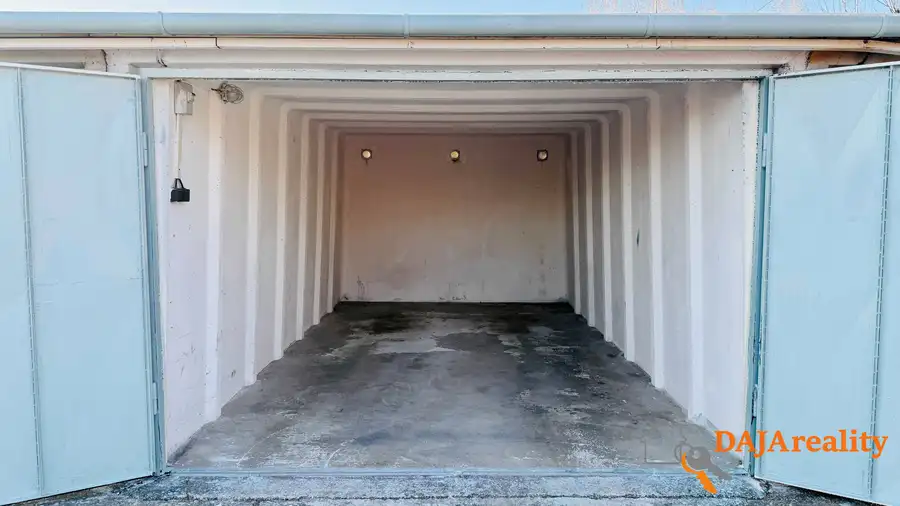
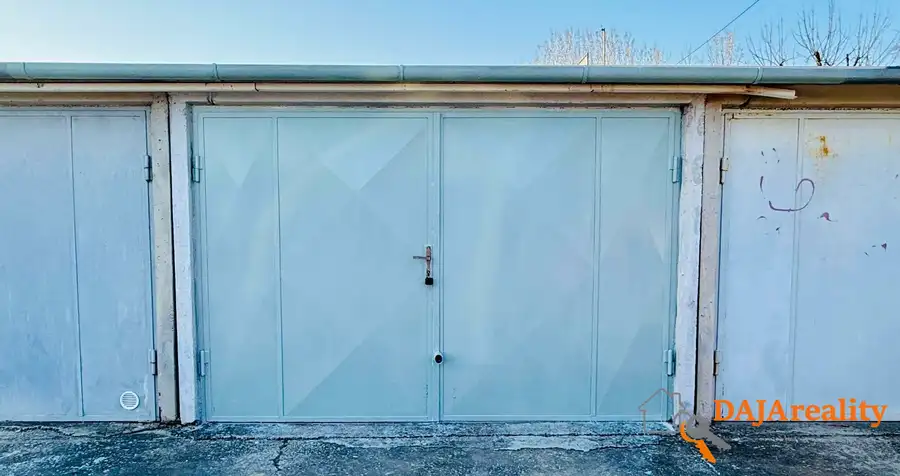

Prenájom · Komerčné priestory
Ponúkame na prenájom garáž, v Šali na ul. Kvetná
Šaľa
Cena na vyžádání


- Plocha20 m²
- StavPôvodný stav
- VlastníctvoOsobné
O nehnuteľnosti
Ponúkame na prenájom radovú garáž v Šali na ul. Kvetná, sídl. Váh, pri hádzanárskej hale..Garáž o rozlohe 20m2 je situovaná v radovej výstavbe s dostatočne širokou prístupovou cestou.V garáži sú vlastné elektrické hodiny 230V, vnútorné osvetlenie, krídlová vstupná brána, vonkajší zámok.Garáž je k dispozícii okamžite.Požadujeme nájom 90,- € s elektrikou, k nájmu požadujeme 2 x depozit, celkovo 270,-€. Preferujeme dlhodobý prenájom.Kontakt: Jozef Boženík, tel: 0948 636 900, email: jozef.bozenik@icloud.com, web: www.dajareality.sk
Parametre
- Druh
- Garáž
- Dátum zverejnenia
- 21. 09. 2026
- Elektrina
- Na pozemku - 230 V
- Energetický certifikát budovy
- nie je
- Odpadové vody
- Nedostupné
- Plyn
- Nedostupné
- Počet nadzemných podlaží
- 1
- Stav nehnuteľnosti
- Pôvodný stav
- Typ
- Prenájom
- Typ konštrukcie
- Panelová
- Vlastníctvo
- Osobné
- Voda
- Nedostupné
- Zastavaná plocha
- 25 m²
- Úžitková plocha
- 20 m²
Kde to je


Ďalšie ponuky
Celá ponuka